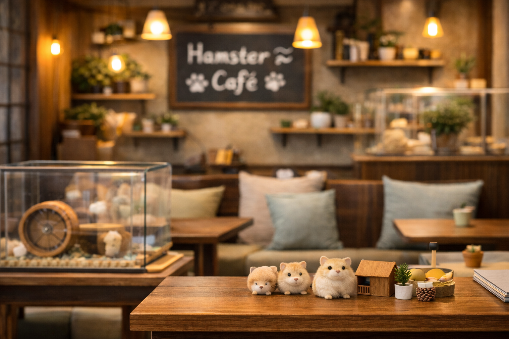
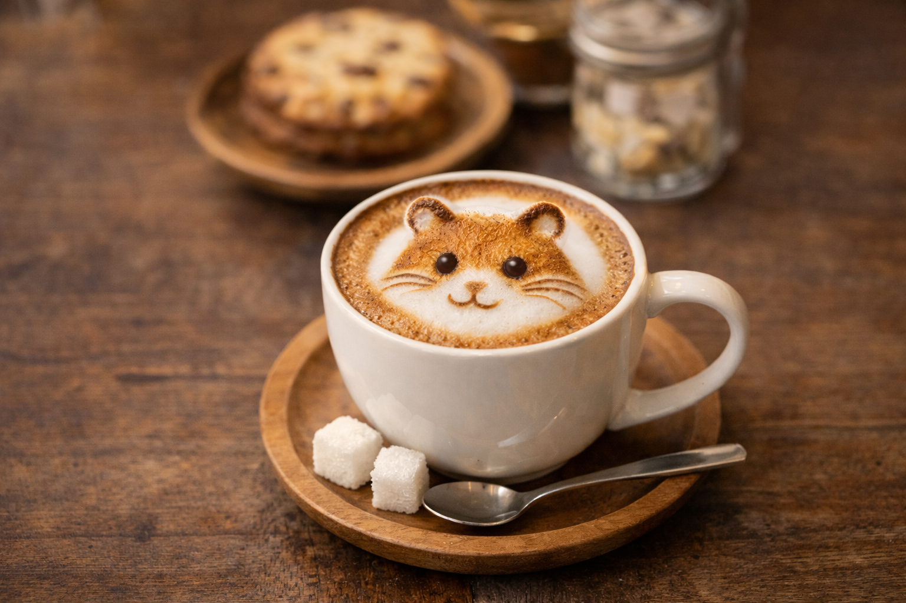

CONCEPT
ただ販売するだけでなく、安心して一緒に暮らせる未来をつくる場所へ。
小さな体で一生懸命生きるハムスター。そのぬくもりが、忙しい毎日にやさしさをくれると私たちは考えています。はむのくらしは、出会いからお迎え後の暮らしまで、やさしく寄り添うブランドです。
HAMU NO KURASHI
カフェで出会い、やさしく知って、お迎え後も続けて支える。はむのくらしは、ハムスターと人が安心して暮らせる毎日を提案するサイトです。
CONCEPT
小さな体で一生懸命生きるハムスター。そのぬくもりが、忙しい毎日にやさしさをくれると私たちは考えています。はむのくらしは、出会いからお迎え後の暮らしまで、やさしく寄り添うブランドです。


CAFE
店内ではハムスターの様子を見ながら、ドリンクやフードを楽しめます。フォトスポットや体験用えさもあり、初めての方でも親しみやすい空間です。
HAMSTERS
性格や飼いやすさ、特徴を見比べながら、気になる種類をじっくり検討できます。トップでは7種類をカルーセルで紹介しています。
STARTER SET
必要な用品をまとめて選べるスターターセットは、小・中・極大の3種類。暮らし方やお部屋の広さに合わせて選べます。
POPULAR ITEMS
ケージ、餌、おもちゃ、ケア用品まで、お迎え後の毎日を支えるアイテムをそろえています。
MEMBERSHIP
100円で1ポイントたまり、ポイントは限定ぬいぐるみやキーホルダーとの交換に使えます。値引きではなく、通う楽しみが増える仕組みです。

ACCESS
はむのくらしは、柏駅から歩いて約5分の商業エリアにある設定です。カフェ利用前や来店相談前に、場所のイメージを確認できます。
アクセスページでは、柏駅表示のマップと道順の目安を確認できます。初めての来店前に場所をイメージしたい方におすすめです。
NEWS